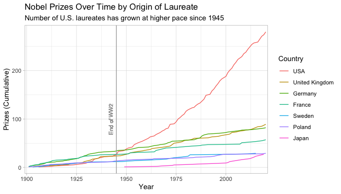

Data for Preceptor’s Primer for
Bayesian Data Science 
About this package
primer.data provides the data used in Preceptor’s Primer for Bayesian Data Science, the textbook used in Gov 1005: Big Data at Harvard University, and for the associated tutorials.
Installation
remotes::install_github("ppbds/primer.data")Loading
After installing the package, it loads as any package should.
library(tidyverse)
library(primer.data)
qscores
#> # A tibble: 748 x 8
#> name department number term enrollment hours rating instructor
#> <chr> <chr> <chr> <chr> <int> <dbl> <dbl> <chr>
#> 1 Introduction to… AFRAMER 100Y 2019-… 49 2.6 4.2 Jesse McCa…
#> 2 American Democr… AFRAMER 123Z 2019-… 49 3.6 4.4 Cornel West
#> 3 Urban Inequalit… AFRAMER 125X 2019-… 40 5.2 4.5 Elizabeth …
#> 4 Richard Wright AFRAMER 130X 2019-… 23 7.2 4.4 Glenda Car…
#> 5 19th century Bl… AFRAMER 131Y 2019-… 20 3.5 4.9 Linda Chav…
#> 6 Social Revoluti… AFRAMER 199X 2019-… 19 7.2 4.8 Alejandro …
#> 7 Martin Luther K… AFRAMER 199Y 2019-… 40 4.2 4.7 Brandon Mi…
#> 8 Elementary Afri… AFRIKAAN AB 2019-… 22 2.9 4.9 John M Mug…
#> 9 Elementary Jama… JAMAICAN AB 2019-… 18 1.5 4.9 John M Mug…
#> 10 Elementary West… WSTAFRCN AB 2019-… 29 2.6 4 John M Mug…
#> # … with 738 more rowsUsing the data
Once the library is loaded and you have confirmed that it can be accessed in your local environment, the data sets can be called as objects and used like any other data you would otherwise read in and assign to an object manually. See the following example of a plot using primary.data::cces.
library(tidyverse)
library(primer.data)
cces %>%
select(state, faminc, ideology) %>%
mutate(ideology = as.double(fct_recode(ideology,
'1' = 'Very Liberal',
'2' = 'Liberal',
'3' = 'Moderate',
'4' = 'Conservative',
'5' = 'Very Conservative',
'6' = 'Not Sure'))) %>%
mutate(faminc = as.numeric(fct_recode(faminc,
'1' = 'Less than 10k',
'2' = '10k - 20k',
'3' = '20k - 30k',
'4' = '30k - 40k',
'5' = '40k - 50k',
'6' = '50k - 60k',
'7' = '60k - 70k',
'8' = '70k - 80k',
'9' = '80k - 100k',
'10' = '100k - 120k',
'11' = '120k - 150k',
'12' = '150k+'))) %>%
mutate(state = str_replace(state, "District of Columbia", "D.C.")) %>%
mutate(state = as.factor(state)) %>%
filter(ideology != 6) %>%
drop_na() %>%
ggplot(., aes(x = ideology, y = faminc)) +
geom_smooth(formula = "y ~ x", method = "lm", se = FALSE) +
facet_wrap(~ state) +
labs(title = "Relation Between Family Income and Political Ideology",
subtitle = "High income tends to be associated with being conservative, especially in red states",
x = "Ideology, higher values = more conservative",
y = "Annual family income, higher values = higher income") +
theme_linedraw()
Citing primer.data
citation("primer.data")
#>
#> To cite 'primer.data' in publications use:
#>
#> David Kane. 2020. 'primer.data'. R package version 0.1.0,
#> <https://github.com/PPBDS/primer.data>.
#>
#> A BibTeX entry for LaTeX users is
#>
#> @Manual{,
#> title = {primer.data},
#> author = {David Kane},
#> year = {2020},
#> url = {https://github.com/PPBDS/primer.data},
#> }